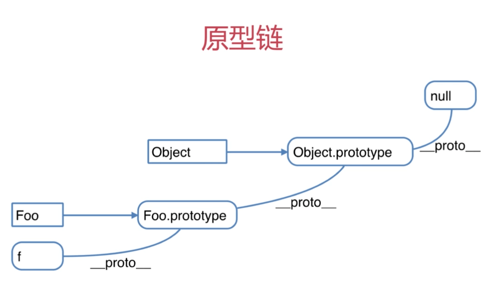

原文出处:本文由博客园博主kilua提供。
原文连接:https://www.cnblogs.com/rainykane/p/12047477.html
原文连接:https://www.cnblogs.com/rainykane/p/12047477.html
本文在个人主页同步更新~
背就完事了
介绍：一些知识点相关的面试题和答案
使用姿势：看答案前先尝试回答，看完后把答案收起来检验成果~
面试官：什么是构造函数
答：构造函数的本质是一个普通函数，他的特点是需要通过`new`关键字来调用，用来创建对象的实例。所有的引用类型，如[],{},function等都是由构造函数实例化而来。一般首字母大写。 解析：首字母大写只是约定俗成的规范。首字母小写的函数也可以用作构造函数。面试官：什么是原型和原型链
答：原型模式是JS实现继承的一种方式。所有的函数都有一个`prototype`属性，通过`new`生成一个对象时，`prototype`会被实例化为对象的属性。所有的引用类型都有一个`__proto__`指向其构造函数的`prototype`。原型链的话，指的就是当访问一个引用类型时，如果本身没有这个属性或方法，就会通过`__proto__`属性在父级的原型中找，一级一级往上，直到最顶层为止。 解析：原型链最顶层Object的`prototype`的`__proto__`指向为null。面试官：如何理解constructor属性
答：所有函数的原型对象都有一个`constructor`属性指向函数本身。
解析：实例化的对象可以通过`[].__proto__.constructor`获取到其构造函数。
面试官：描述new 操作符的执行过程
答： 1. 创建一个空对象。 2. 将这个空对象的`__proto__`指向构造函数的`prototype`。 3. 将构造函数的`this`指向这个对象。 4. 执行构造函数中的代码。面试官：如何判断一个变量是数组类型
答: 使用`instanceof`关键字 或者`constructor`属性。 解析：`instanceof`的原理是判断操作符左边对象的原型链上是否有右边构造函数的`prototype`属性。理解小帮手
介绍：总结性的图表,代码例子或笔试题目和解析，让知识点更容易懂
关于构造函数和原型
构造函数：相当于java中“类”的存在，如原生JS中的Array, Function, String, Date等等，都是构造函数。例如new Date()通过new操作符进行调用，用来创建一个Date对象的实例。
一个便于理解的栗子，描述js通过原型模式实现继承的过程
function Animal (name) { // 构造函数
this.name = name
}
Animal.prototype.type = 'animal' // 原型上的属性和方法可以被继承
Animal.prototype.eat = function () {
console.log('eat')
}
let dog = new Animal('忠犬八公') // 通过new 调用构造函数创建Animal的实例dog
console.log(dog.name) // 输出：忠犬八公
console.log(dog.type) // 输出：animal
dog.eat() // 输出：eat
console.log(dog.__proto__) // 输出：{ type:'animal', eat: f, __proto__: ...}
// dog.__proto__ 指向其构造函数Animal的prototype对象一个关于原型的实用型例子
function Elem(id) {
this.elem = document.getElementById(id)
}
Elem.prototype.html = function (val) {
var elem = this.elem
if (val) {
elem.innerHTML = val
return this // 链式编程
}else{
return elem.innerHTML
}
}
Elem.prototype.on = function (type, fn) {
var elem = this.elem
elem.addEventListener(type, fn)
}
var div1 = new Elem('div1')
div1.html('灶门碳治郎').on('click', (e) => {
alert('灶门碳治郎')
})这个栗子，使用原型将对dom节点的操作封装起来，只要创建一个Elem实例就轻松插入dom和添加事件监听。
原型链

所有的引用类型会有一个__proto__属性指向其构造函数的prototype，当访问这个引用类型的变量和方法时，会通过__proto__属性一层层往上找。如[]不止有构造函数Array原型上的方法，还有可以通过原型链找到Object原型上的方法。
关于instanceof 和 constructor
instanceof：判断操作符右边的参数是否在左边的原型链上。所以[] instanceof Object也为true
let obj = {}
let arr = []
console.log(typeof(obj)) // object
console.log(typeof(arr)) // object
console.log(obj instanceof Array) // false
console.log(arr instanceof Array) // true
console.log(obj.constructor === Array) // false
console.log(arr.constructor === Array) // true通过以上代码可以学习通过instanceof关键字和constructor 属性进行数据类型判断的使用方式。
知识延伸
先有鸡还是先有蛋
JS究竟是先有Object还是先有Function呢？
console.log(Function instanceof Object) // 输出：true
console.log(Object instanceof Function) // 输出：trueObject和Function究竟是什么关系，这个问题一度困扰着我，直到我看到了这张图

简单理解为：
Function在Object的原型链上，因为Object是构造函数，他的__proto__指向Function的原型Object在Function的原型链上，因为Function是构造函数，他的__proto__指向的也是他自己的原型，然而Function.prototype本质上是一个对象，所以Function.prototype.__proto__指向Object.prototype。
关于链式编程
上述“一个关于原型的实用例子”中，提到了链式编程，在此做简单介绍
function Dog(){
this.run = function(){
alert('dog is run...')
return this // 链式编程的关键
}
this.eat = function(){
alert('dog is eat...')
return this
}
this.sleep = function(){
alert('dog is sleep...')
return this
}
}
var d1 = new Dog()
d1.run().eat().sleep()通过以上代码可以看出
- 链式编程的设计模式就是，调用的函数的时候，可以基于其返回值继续调用其他方法。
- 关键在于方法执行结束后需要有一个供继续调用的返回值，如
this等。
Kane -- 一切都是命运石之门的选择